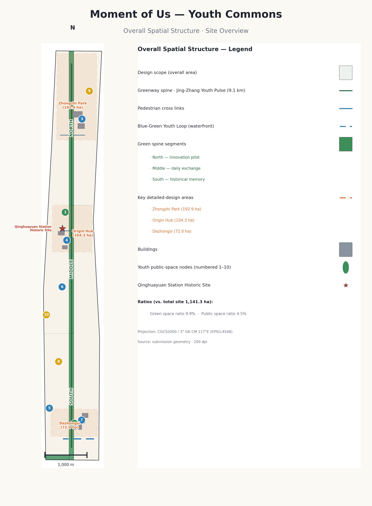
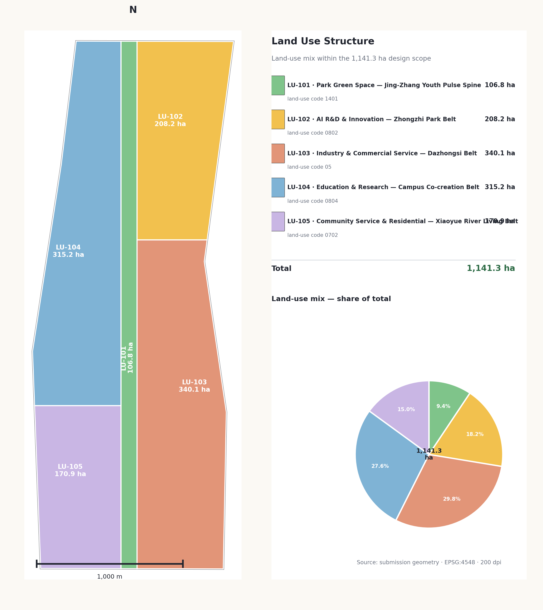
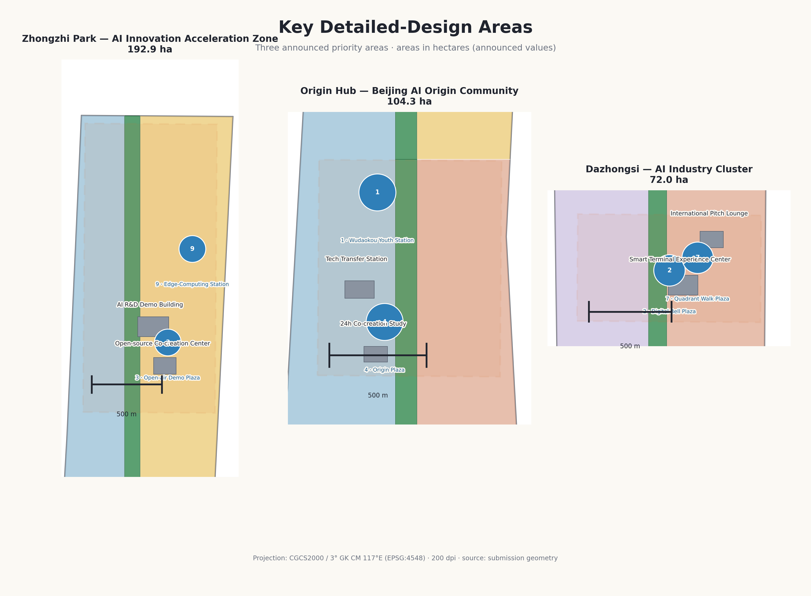
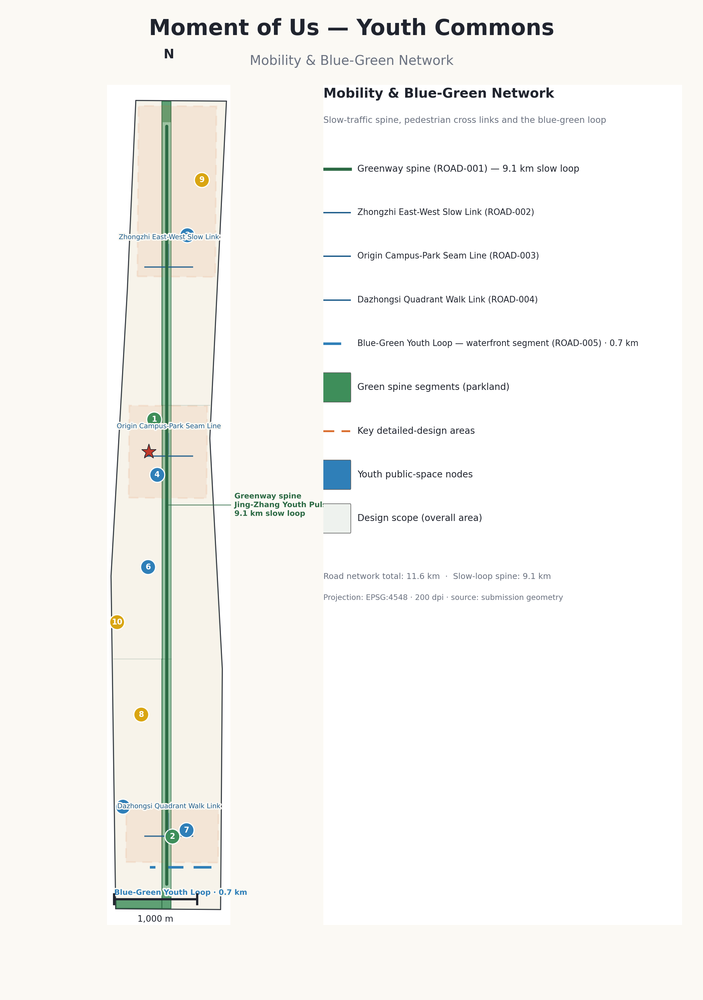
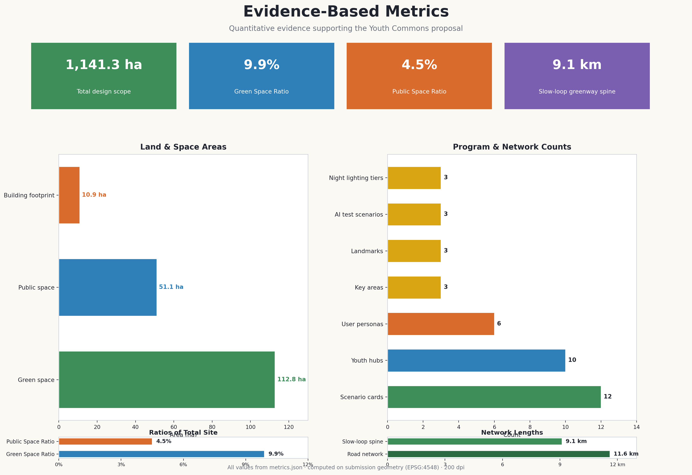

Centennial Jing-Zhang AI Innovation Belt · Youth-Friendly Public Space Track · International Urban Design Call
Jing-Zhang Heritage Park AI Youth Co-creation Vitality Belt
京张遗址公园AI青年共创活力带 · 青年友好公共空间与AI场景赋能设计提案
For the Youth-Friendly Public Space track, the proposal adopts Jing-Zhang Youth Pulse Belt as the overall
concept, shaping the centennial Jing-Zhang Heritage Park and its corridor into a public-space spine where young talent
wants to come, stays, and co-creates. Anchored on the trinity of Third Space System, Invisible AI
Infrastructure, and Community Co-creation Mechanism, it forms the spatial structure of
One Belt · Three Cores · Multiple Nodes + the Blue-Green Youth Loop, delivered through 12 AI scenario cards,
6 youth personas, a Youth-Friendly Seven-Piece Kit, 3+1 pilgrimage landmarks, a three-layer cultural narrative and an
annual activity system — all discussable, re-checkable, and implementable.
Third Space SystemInvisible AI InfrastructureCommunity Co-creationOne Belt · Three Cores · NodesBlue-Green Youth LoopYouth-Friendly Kit3+1 Landmarks3-Layer Narrative
11.4 km²Overall design scope
9.9%Green ratio green_ratio
4.4%Public space ratio public_space_ratio
9.1 kmBlue-Green Loop spine slow_loop
11.6 kmRoad network road_length
3Key areas key_areas
12AI scenarios scenarios
6Youth personas personas
10Youth hubs youth_hubs
3+1Pilgrimage landmarks
Youth Pulse Belt Jing-Zhang · Youth
01
Key NumbersKEY NUMBERS
All figures derive from metrics.json and recomputation over the submitted geometry layers; geometry is based on the provisional boundary and must be fully recomputed once official polygons are released.
11.4km²Overall design scope site_area 11,412,825 m²
3Industry test & validation scenarios ai_test_scenario_count
43.6km²Research scope (registered) pending official recomputation
368.4haThree key areas combined (registered) pending official polygons
02
Design ConceptDESIGN CONCEPT
The overall concept is the Jing-Zhang Youth Pulse Belt — let the pulse of AI innovation beat, along the track of
China's first self-built railway, through the everyday public life of young people. The trinity of
Third Space System + Invisible AI Infrastructure + Community Co-creation Mechanism runs through the plan;
spatially it is organized as One Belt · Three Cores · Multiple Nodes + the Blue-Green Youth Loop, where the Belt
is not a newly drawn red line but a translation of the announcement's three-tier scope into working method.
Third Space System
Third Space System
Spaces beyond work and home form the organizing core of youth-friendly public space: co-creation rooms, pitch plazas,
the Youth Waterfront and night-vitality running tracks let socializing, learning, sport and consumption happen in everyday stays.
Invisible AI Infrastructure
Invisible AI Infrastructure
AI is not a showcase gimmick but invisible infrastructure that lowers participation thresholds, raises spatial
adaptability and amplifies youth co-creation; every scenario is explainable, re-checkable and human-overridable,
using aggregate statistics only — never tracking individuals.
Community Co-creation
Community Co-creation Mechanism
Youth stewardship, a proposal feedback loop and a public-space reservation platform turn young users into producers
of spatial content, closing the traceable loop of submit → de-identify → publish → review → reply.
Spatial structure — One Belt · Three Cores · Multiple Nodes + Blue-Green Youth Loop:
Belt · Jing-Zhang Youth Pulse Belt
Public-life spine along the Heritage Park, segmented into north "Innovation & Testing", middle "Everyday Life", south "Historic Memory" (conceptual, not administrative).
Cores · Three Key Areas
Lab Commons, Origin Co-Lab and Digital Bell Plaza carry innovation industry, results transformation and international exchange.
Nodes · Youth Hubs
Transit-station and community-level nodes offering information, rest, charging, rental and unattended services within walking reach.
Loop · Blue-Green Youth Loop
Composite loop linking the Jing-Zhang Park, Xiaoyue River waterfront, Qinghe interface and university greenbelts with slow mobility and night vitality.
Naming system (agent.1 concept & naming · consistent with docs/terminology-glossary.md)
Level
Chinese
English
Meaning
Belt name
京张青年脉动带
Jing-Zhang Youth Pulse Belt
Echoes the three positions: Centennial Cultural Belt, Urban AI Life Experience Belt, AI Integration Innovation Belt
Spine
轨道·青年脉
Youth Pulse Track
Linear public-life spine along the Heritage Park
Core scenario names
众智·试验场 / 原点·共创社 / 大钟寺·数字钟声
Lab Commons / Origin Co-Lab / Digital Bell Plaza
One per key area
Composite loop
蓝绿青年环
Youth Blue-Green Loop
Slow mobility + green space + night vitality
Xiaoyue River wing
青年水岸
Youth Waterfront
Xiaoyue River scenario wing
Community nodes
青年驿站
Youth Hub
Transit-station and community public-space nodes
03
Spatial Structure & Three TiersSPATIAL STRUCTURE
Work is organized across the announcement's three tiers — task to layer, layer to metric — so every conclusion traces back through the evidence chain; all geometry is provisional.

Fig. 01Evidence chain and overall-scope overview · land use, slow mobility, blue-green public space, building renewal and AI scenario nodes in one map (provisional boundary)
Research Scope
43.6 km² (registered · pending official recomputation)
AI industry ecosystem, strategic positioning, innovation chain and future urban form; the university-origin → open-source → enterprise-transfer → public-experience → global-dissemination chain.
Overall Design Scope
11.4 km² (site_area 11,412,825 m²)
A 1–2 km urban area around the Jing-Zhang Heritage Park: urban-renewal framework, industry layout, transport & municipal support and urban-character control.
Key Areas Scope
368.4 ha (three key areas, registered total)
Three detailed-design areas specifying functional mix, building scale, retain/renovate/demolish classification, public-space connectivity and transport organization.
Three thematic segments of the park belt (conceptual, not administrative):
North · Innovation & Testing
Tech interface and innovation testing, hosting open testing, safety governance and low-carbon compute experience near Lab Commons.
Middle · Everyday Life
Daily life and commercial interface, where seating groups, co-creation tables and the night running track support high-frequency use.
South · Historic Memory
Historic memory and heritage interface, with Qinghua Garden Station and southern track memories anchoring the three-layer cultural narrative.
04
Land Use & Urban RenewalLAND & RENEWAL
The land-use plan forms complete, closed, seamless zones: the Jing-Zhang Heritage Park belt anchors the parkland spine (≈106.8 ha, pending recomputation), the Lab Commons belt forms AI R&D innovation land (≈208.2 ha, pending recomputation); building scale and intensity are registered as "pending official control-plan conditions" — no pseudo-precision control lines.

Fig. 02Three tiers and spatial working framework · land-use zones, development intensity and renewal projects expressed in layers (provisional boundary)
Retain / renovate / demolish is treated in four low-disturbance categories:
Retain
Valuable heritage buildings and structurally sound stock, e.g. around the Qinghua Garden Station site.
Renovate
Function replacement and facade renewal, e.g. near-campus ground-floor program shifts and co-creation street activation.
Rebuild
Genuinely inefficient buildings to be demolished and rebuilt, premised on ownership and control-plan conditions.
Pending
Insufficient baseline; registered for verification only. No conclusions are fabricated without ownership, control-plan and engineering data.
Renewal project list (JZ-01 … JZ-08 · reverse-check on conditions: unconfirmed projects stay conceptual)
ID
Project
Type
Key dependencies
JZ-01
Jing-Zhang Youth Pulse Belt slow-mobility gap stitching
Public space / Mobility
Road red lines, under-bridge space, transport review
Each area answers "what do young people do here, when do they come, and with whom", and shares a youth-friendly baseline: at least one reservable public space, a 24-hour service point, direct connection to transit or the slow spine, and AI scenarios that are explainable, re-checkable and human-overridable.

Fig. 03Key areas index and design tasks · Lab Commons / Origin Co-Lab / Digital Bell Plaza (provisional boundary)
Lab Commons 众智·试验场
Zhongzhi Park AI Autonomous Innovation Accelerator
≈192.1 ha registered · ≈192.9 ha recomputed (both provisional)
A garden-style full-stack autonomous-innovation block: open-source co-creation dome, open-air pitch plaza, safety-governance sandbox; strengthens the Qinghe interface with low-carbon innovation exchange and external mobility.
Slow-mobility stitching across campus, park and streets: near-campus co-creation street, 24h co-creation room and results-release hall; supplements results display, talent services and open-source collaboration interfaces.
AI scenariosOpen-source community · results release · talent-zone services · near-campus incubation
Digital Bell Plaza 大钟寺·数字钟声
Dazhongsi AI Industry Cluster
Urban intelligent economy & international exchange block
Digital Bell Plaza, four-quadrant pedestrian connectivity and an international pitch lounge; smart-terminal and content-consumption experience plus a night-vitality segment, with station integration and static-traffic organization.
AI scenariosAgents & smart-terminal display · content consumption · data elements · international pitches
Framed by the Heritage Park vitality belt and coordinating Qinghe, Xiaoyue River, universities and enterprises, the system runs north–south through and east–west across; mobility design focuses not on road widening but on "how young people arrive and stay at low cost and high frequency".

Fig. 04Transport, slow-mobility and blue-green public-space composite · transit-station integration, slow-mobility gap stitching, tiered lighting and the four segments of the Blue-Green Youth Loop (provisional boundary)
The Blue-Green Youth Loop is organized in four segments:
Park segment
Everyday paths and the night-vitality running track for high-frequency daily contact and sport.
Waterfront segment
Xiaoyue River Youth Waterfront — social and market grounds, hosting monthly/festival youth markets.
Qinghe interface
Combines industry display with low-carbon compute experience, linking the Lab Commons innovation interface.
University greenbelt
Study and slow-mobility connection between university greenbelts and the Origin near-campus interface.
Night vitality uses a three-tier lighting system (BasicActiveEvent) — no surveillance profiling; tiering and event scheduling only.
Transit-station integration
Wudaokou (near-campus gateway), Dazhongsi (four-quadrant hub) and Qinghua East Road West (park–university interface) combine with Youth Hubs: arrive by rail, reach home by foot.
Slow-mobility gap stitching
Cross-expressway and cross-river gaps need engineering studies; junction gaps are solved via four-quadrant walking, under-bridge spaces activated, and park ends linked by gates and hubs.
Last-kilometer access
Bike parking, shared-ride zones and slow-mobility signage; station-first, sharing-first, small-scale dispersal to cut time and cost barriers.
07
Metrics & Evidence ChainMETRICS & EVIDENCE
Known metrics are recomputable from GeoJSON or trusted sources; unknown metrics state their reason and formal preconditions. All metrics must be recomputed once official boundaries replace the provisional ones.

Fig. 05Core metric recomputation and evidence chain · area, ratio, length and count metrics derived by layer formulas (provisional boundary)
Core metrics (metrics.json · full formulas, source files and confidence in the structured data)
Metric
Registered value
Status
Note
site_area_sqm
11,412,825 m² (≈11.4 km²)
Known · High
Overall design scope, submitted boundary polygon area
green_space_area_sqm
1,128,201 m²
Known · Medium
Sum of green-space layer features
green_ratio
9.9% (0.098854)
Known · Medium
Green-space area ÷ overall-scope area
public_space_area_sqm
501,206 m²
Known · Medium
Sum of public-space layer features
public_space_ratio
4.4% (0.043916)
Known · Medium
Public-space area ÷ overall-scope area
road_length_m
11,586 m (≈11.6 km)
Known · Medium
Sum of road-network line lengths
slow_loop_length_m
9,100 m (≈9.1 km)
Known · Medium
Blue-Green Youth Loop slow spine length
building_footprint_area_sqm
108,700 m²
Known · Medium
Building footprints (design example, not approved scale)
key_area_count
3
Known · High
Three key detailed-design areas
scenario_card_count
12
Known
AI scenario cards (brief requires ≥10)
persona_count
6
Known
Youth personas (brief requires ≥5)
ai_test_scenario_count
3
Known
Industry test & validation scenarios (≥3 met)
landmark_count
3 (+1 reserve)
Known
Pilgrimage landmarks S1–S3, S4 as reserve
night_lighting_tier_count
3
Known
Basic / active / event lighting tiers
youth_hub_count
10
Known
Youth hubs / public nodes (PUBLIC-001…010)
floor_area_ratio
Pending official control-plan conditions
unknown
Official controls and boundary absent; no speculative fill
transit_station_800m_coverage
Missing baseline, pending
Pending
Station locations and 800 m service basemap absent
08
12 AI Scenario CardsAI SCENARIOS
Every scenario states its users, spatial location, privacy boundary and human-review mechanism under three hard rules: explainability first, human override first, de-identification first — aggregate statistics only, no individual tracking.
Group I · Serving Innovation Industry
01Open-Source Release Hall
Origin Co-Lab · results release and collaboration node for developers and startups.
No behavior tracking; aggregate statistics only0224h Youth Co-creation Room
Origin community / Youth Hub · reservation-based, identity-free study and collaboration space.
Reservation-based; no identity recognition03Open-Air Pitch Plaza
Lab Commons · startup pitches, developer conference and hackathon venue.
Public events; imagery requires authorization04Safety-Governance Sandbox
Lab Commons · visitable node for standards setting, safety evaluation and red-team testing.
Desensitized display; human review05Edge Compute Station
Scope-wide nodes · new-infrastructure prototype delivering compute as a public service.
Compute services require separate consent06AI+ Education Experience Point
Near-campus nodes · learning, internships and lifelong learning interface.
Curated teaching content by humans
Group II · Serving Public Life
07Night Vitality Running Track
Middle park segment · youth night running supported by tiered lighting.
Tiered lighting; no surveillance profiling08AI Slow-Mobility Navigation
Whole belt · explainable wayfinding and slow-mobility information service.
Explainable signage; no individual tracking09Digital Bell Plaza
Digital Bell Plaza · smart-terminal experience, content consumption and international pitches.
Content-consumption data requires consent10Xiaoyue River Youth Waterfront
Youth Waterfront · social, market and festival interface.
Event data aggregated only
Group III · Serving Community Co-creation
11Community Proposal Wall
Community-level hubs · AI-assisted public-issue collection and feedback interface.
De-identified issues; human review12Low-Speed Robot Delivery Pilot
Park / park-internal roads · bounded, supervised delivery prototype.
Bounded area, supervised, stoppable anytime
09
Six Youth PersonasYOUTH PERSONAS
The six personas are not abstract labels but real spatial moments; each carries a set of "spatial moments" that shape facility layout and a set of "data boundaries" that shape the privacy design of AI scenarios.
Open-Source Developer
22–35
Release, collaborate, test, community reputation; maintains reputation through after-hours night collaboration.
Spaces: Open-Source Release Hall · public code wall · night collaboration space
Startup Team
25–40
Low-cost office, compute access, product testing; moves between co-creation rooms and the pitch plaza to test products.
Commute, leisure, childcare, community participation; walks the Loop with a stroller and posts proposals to the wall.
Spaces: Blue-Green Youth Loop · proposal wall · community experiment units
Park Youth Employee
22–35
Recovery between work, social, sport; recharges in the park belt during lunch and after hours.
Spaces: youth seating groups · night running track · Youth Hubs
Visitor / Event Participant
18–45
Cultural experience, events, consumption; comes for an event or a pilgrimage route.
Spaces: Digital Bell Plaza · youth markets · wayfinding system
10
Youth-Friendly Seven-Piece KitYOUTH-FRIENDLY KIT
A modular, replicable, low-cost public-space component library expressed as public_space layer node types; low cost and small footprint per unit — validated in near-term pilots, then scaled in the mid-term.
High priority
1 · Youth Seating Group
Movable, joinable seating with power and shade — sit, plug in, meet anytime.
High priority
2 · Co-creation Table
Outdoor work table + whiteboard wall + low-threshold display, turning the park into a workable living room.
Medium priority
3 · Movable Display
Modular display frames for community exhibitions, project showcases and event pop-ups.
Landmarks rest on public historical fact and conceptual design, respecting heritage, green, blue-line and traffic-safety constraints; wayfinding uses the "sleeper + pulse" visual motif.
S1
Qinghua Garden Station · AI Origin Marker
Qinghua Garden Station site
Where history meets the future — origin of the cultural narrative.
S2
Open-Source Co-creation Dome
Zhongzhi Park
Carrier of the code-contribution wall and recognition system.
S3
Digital Bell Plaza
Dazhongsi
Smart-terminal and content-consumption experience; international pitch lounge.
Implementation phasing is distinct from the 100-day call cycle: the call cycle sets the submission deadline; phasing sets the urban-renewal and construction path. Operational phasing is decoupled from spatial phasing — activities roll on quarterly without waiting for construction completion.
Near-term · Concept Pilots
PHASE-001
Light facilities, operations and Youth Hub prototypes first: seating groups, tiered lighting, markets and co-creation rooms, i.e. low-dependency projects (JZ-05, JZ-07).
Mid-term · Belt Connection
PHASE-002
Slow-mobility gap stitching, Youth Waterfront and hub-network expansion, scaling the component kit (JZ-01, JZ-03, JZ-06).
Long-term · After Conditions Confirmed
PHASE-003
Major projects such as Digital Bell Plaza and the co-creation dome proceed after control-plan, municipal, transport and ownership conditions are confirmed (JZ-02, JZ-04, JZ-08).
Annual activity system (agent.6 · conceptual proposal, not a government commitment; organizers own safety and rights clearance)
Activity
Venue
Frequency
Operating boundary
Developer Conference / Hackathon
Lab Commons open-air pitch plaza
Annual
Developer community; organizers own safety & clearance
Open-Source Open Day
Origin release hall
Quarterly
Open-source community; contribution data shown aggregated only
Youth Night-Run Season
Jing-Zhang park belt
Spring & summer
Young residents; tiered lighting, no surveillance profiling
Youth Market
Xiaoyue River Youth Waterfront
Monthly / festival
Youth curators & micro-teams; event permits & rights clearance
Digital Bell New Year / Festivals
Dazhongsi Plaza
Annual
Visitors / residents; content-consumption data requires consent
Community co-creation mechanism:
Youth Stewardship
Per-area stewards handle event reservations, facility inspection and proposal collection.
Proposal Feedback Loop
Submit → de-identify → publish → review → reply; traceable issues without leaking personal information.
Space Reservation Platform
Open reservation with human review; public schedules; safety and copyright responsibility held by organizers.